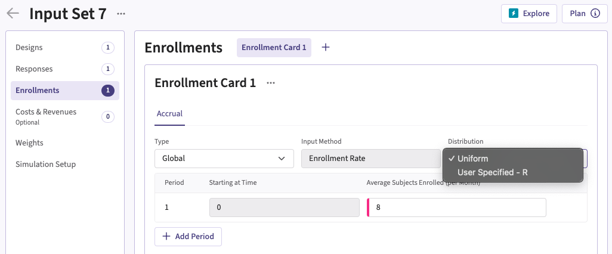
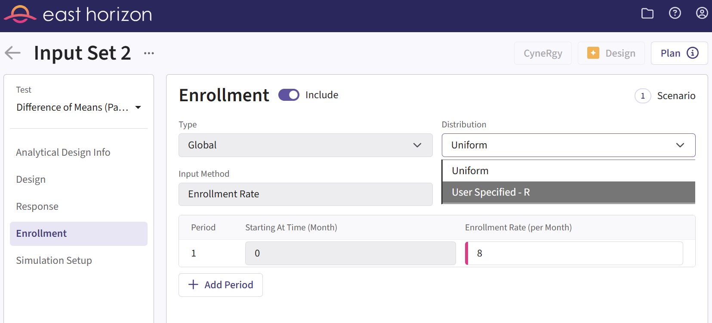
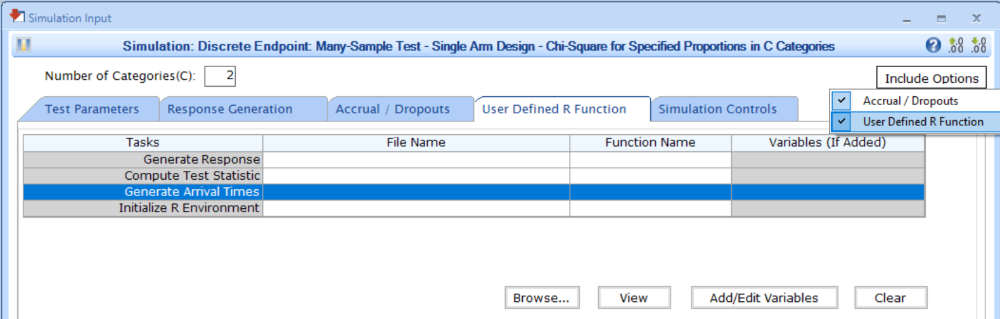

Integration Point: Enrollment
Gabriel Potvin
February 19, 2026
IntegrationPointEnrollment.RmdGo back to the Getting Started: Overview page
Description
The Enrollment integration point allows you to customize the distribution of subject arrival times using a custom R script. Instead of relying on a default uniform distribution, you can implement alternative enrollment patterns such as Poisson, equidistant, or exponential enrollment, among others, to better suit your trial’s requirements.
Availability
East Horizon Explore
This integration point is available in East Horizon Explore for the following study objectives and endpoint types:
| Time to Event | Binary | Continuous | Continuous with repeated measures | Count | Composite | Dual TTE-TTE | Dual TTE-Binary | |
|---|---|---|---|---|---|---|---|---|
| Two Arm Confirmatory | ✅ | ✅ | ✅ | ✅ | ❌ | ❌ | ✅ | ✅ |
| Multiple Arm Confirmatory | 🔜 | ✅ | ✅ | - | - | - | - | - |
| Dose Finding | - | - | ❌ | - | - | - | - | - |
East Horizon Design
Click to expand/collapse
This integration point is available in East Horizon Design for the following study objectives and endpoint types:
| Time to Event | Binary | Continuous | Continuous with repeated measures | Count | Composite | Dual TTE-TTE | Dual TTE-Binary | |
|---|---|---|---|---|---|---|---|---|
| Two Arm Confirmatory | ✅ | ✅ | ✅ | ✅ | ❌ | ❌ | 🔜 | 🔜 |
| Two Arm Confirmatory - Multiple Endpoints | ✅ | ✅ | ✅ | - | - | - | - | - |
| Multiple Arm Confirmatory | 🔜 | 🔜 | 🔜 | - | - | - | - | - |
| Dose Finding | - | - | ❌ | - | - | - | - | - |
This integration point is available in East Horizon Design for the following tests:
| Test | Study Objective | Endpoint | Availability |
|---|---|---|---|
| Single Mean (One Arm Design) | One Arm Exploratory/Confirmatory | Continuous | ❌ |
| Mean of Paired Differences (Paired Design) | One Arm Exploratory/Confirmatory | Continuous | ❌ |
| Mean of paired Ratios (Paired Design) | One Arm Exploratory/Confirmatory | Continuous | ❌ |
| Single Proportion (One Arm Design) | One Arm Exploratory/Confirmatory | Binary | ❌ |
| Simon’s Two Stage (One Arm Design) | One Arm Exploratory/Confirmatory | Binary | ❌ |
| Logrank Weibull Distribution (One Arm Design) | One Arm Exploratory/Confirmatory | Time to Event | ❌ |
| Parametric Weibull Distribution (One Arm Design) | One Arm Exploratory/Confirmatory | Time to Event | ❌ |
| Logrank Exponential Distribution (One Arm Design) | One Arm Exploratory/Confirmatory | Time to Event | ❌ |
| Single Poisson Rate (One Arm Design) | One Arm Exploratory/Confirmatory | Count | ❌ |
| Difference of Means (Parallel Design) | Two Arm Confirmatory | Continuous | ✅ |
| Ratio of Means (Parallel Design) | Two Arm Confirmatory | Continuous | ❌ |
| Difference of Means (Crossover Design) | Two Arm Confirmatory | Continuous | ❌ |
| Ratio of Means (Crossover Design) | Two Arm Confirmatory | Continuous | ❌ |
| Difference of Proportions (Parallel Design) | Two Arm Confirmatory | Binary | ✅ |
| Ratio of Proportions (Parallel Design) | Two Arm Confirmatory | Binary | ✅ |
| Odds Ratio of Proportions (Parallel Design) | Two Arm Confirmatory | Binary | ✅ |
| Fisher’s Exact (Parallel Design) | Two Arm Confirmatory | Binary | ❌ |
| Logrank Test Given Accrual Duration and Accrual Rates (Parallel Design) | Two Arm Confirmatory | Time to Event | ✅ |
| Logrank Test Given Accrual Duration and Study Duration (Parallel Design) | Two Arm Confirmatory | Time to Event | ✅ |
| Logrank Test Given Accrual Duration and Accrual Rates (Population Enrichment) | Two Arm Confirmatory | Time to Event | ❌ |
| Ratio of Poisson Rates (Parallel Design) | Two Arm Confirmatory | Count | ❌ |
| Ratio of Negative Binomial Rates (Parallel Design) | Two Arm Confirmatory | Count | ❌ |
| Win Ratio (Parallel Design) | Two Arm Confirmatory | Composite | ❌ |
| MAMS Difference of Means (Pairwise Comparisons to Control) | Multiple Arm Confirmatory | Continuous | 🔜 |
| MAMS Difference of Means: Combining P-Values (Pairwise Comparisons to Control) | Multiple Arm Confirmatory | Continuous | ❌ |
| MAMS Difference of Proportions (Pairwise Comparisons to Control) | Multiple Arm Confirmatory | Binary | 🔜 |
| MAMS Difference of Proportions: Combining P-Values (Pairwise Comparisons to Control) | Multiple Arm Confirmatory | Binary | ❌ |
| MAMS Logrank (Pairwise Comparisons to Control) | Multiple Arm Confirmatory | Time to Event | 🔜 |
| MAMS Logrank: Combining P-Values (Pairwise Comparisons to Control) | Multiple Arm Confirmatory | Time to Event | 🔜 |
East
This integration point is available in East for the following tests (click to expand/collapse):
| Test | Number of Samples | Endpoint | Availability |
|---|---|---|---|
| Difference of Means (Parallel Design) | Two Samples | Continuous | ✅ |
| Difference of Proportions (Parallel Design) | Two Samples | Discrete | ✅ |
| Ratio of Proportions (Parallel Design) | Two Samples | Discrete | ✅ |
| Odds Ratio of Proportions (Parallel Design) | Two Samples | Discrete | ✅ |
| Logrank Test Given Accrual Duration and Accrual Rates (Parallel Design) | Two Samples | Survival | ✅ |
| Logrank Test Given Accrual Duration and Study Duration (Parallel Design) | Two Samples | Survival | ✅ |
| Chi-Square for Specified Proportions in C Categories (Single Arm Design) | Many Samples | Discrete | ✅ |
| Two Group Chi-Square for Proportions in C Categories (Parallel Design) | Many Samples | Discrete | ✅ |
| Multiple Looks - Combining P-Values (Pairwise Comparisons to Control - Difference of Means) | Many Samples | Continuous | ❌ |
| Multiple Looks - Combining P-Values (Multiple Pairwise Comparisons to Control - Difference of Proportions) | Many Samples | Discrete | ❌ |
| Multiple Looks - Combining P-Values (Pairwise Comparisons to Control - Logrank Test) | Many Samples | Survival | ❌ |
Instructions
In East Horizon Explore
You can set up an enrollment function under Distribution in a Enrollment Card while creating or editing an Input Set.
Follow these steps (click to expand/collapse):
- Select User Specified-R from the dropdown in the Distribution field in the Enrollment Card.
- Browse and select the appropriate R file (
filename.r) from your computer, or use the built-in R Code Assistant to create one. This file should contain function(s) written to perform various tasks to be used throughout your Project. - Choose the appropriate function name. If the expected function is not displaying, then check your R code for errors.
- Set any required user parameters (variables) as needed for your function using + Add Variables.
- Continue creating your project.
For a visual guide of where to find the option, refer to the screenshot below:
In East Horizon Design
You can set up an enrollment function under Distribution in the Enrollment section of an Input Set created by simulation.
Follow these steps (click to expand/collapse):
- Create and compute a first analytical design input set.
- Navigate to the Results section and simulate the analytical design.
- Navigate to the new simulation input set that was created.
- Select User Specified-R from the dropdown in the Distribution field in the Enrollment tab.
- Browse and select the appropriate R file (
filename.r) from your computer, or use the built-in R Code Assistant to create one. This file should contain function(s) written to perform various tasks to be used throughout your Project. - Choose the appropriate function name. If the expected function is not displaying, then check your R code for errors.
- Set any required user parameters (variables) as needed for your function using + Add Variables.
- Continue creating your project.
For a visual guide of where to find the option, refer to the screenshot below:
In East
You can set up an enrollment function by navigating to the Generate Arrival Times task of the User Defined R Function tab of a Simulation Input window, after including the option.
Follow these steps (click to expand/collapse):
- Choose the appropriate test in the Design tab.
- If you see the Design Input window, compute the scenario using the Compute button, save the design using the Save in Workbook button, then navigate to the Simulation Input window by clicking on the Simulate Design button under Library.
- Click on the Include Options button on the top right corner of the Simulation Input window and select both Accrual / Dropouts and User Defined R Function.
- In the tab User Defined R Function, a list of tasks will appear. Place your cursor in the File Name field for the task Generate Arrival Times.
- Click on the button Browse… to select the
appropriate R file (
filename.r) from your computer. This file should contain function(s) written to perform various tasks to be used throughout your Project. - Specify the function name you want to initialize. To copy the function’s name from the R script, click on the button View.
- Set any required user parameters (variables) as needed for your function using the button Add/Edit Variables.
- Continue setting up your project.
For a visual guide of where to find the option, refer to the screenshot below:

Input Variables
When creating a custom R script, you can optionally use certain
variables provided by East Horizon’s or East’s engine itself. These
variables are automatically available and do not need to be set by the
user, except for the UserParam variable. Refer to the table
below for the variable that is available for this integration point.
| Variable | Type | Description |
|---|---|---|
| NumSub or NumPat | Integer | Number of subjects in the trial. Is called NumPat for
Study Objective = Two Arm Confirmatory - Multiple Endpoints. |
| Type | Integer | Enrollment type specified by the user: – 0:
Global– 1: Regional. |
| NumPrd | Integer | Number of accrual periods in the trial. Only applicable if
Type = 0 (Global). |
| PrdStart | Vector of Numeric | Vector of length NumPrd, indicating the start time of
each period, with PrdStarr[ 1 ] = 0. Only applicable if
Type = 0 (Global). |
| RegionName | Array of Character | Vector of length equal to the number of regions, indicating the
geography/region names. Only applicable if Type = 1
(Regional). |
| RegionStart | Array of Numeric | Vector of length equal to the number of regions, indicating the
start times for each geography. Only applicable if Type = 1
(Regional). |
| EnrollmentCapPcnt | Array of Numeric | Vector of length equal to the number of regions, indicating the
enrollment caps (%) for each geography. Only applicable if
Type = 1 (Regional). |
| AccrRate | Vector of Numeric | Vector of length NumPrd (if Type = 0,
Global) or length equal to the number of regions (if
Type = 1, Regional), indicating the accrual rate for each
accrual period or each geography. |
| UserParam | List | Contains all user-defined parameters specified in East Horizon’s or
East’s interface (refer to the Instructions
section). To access these parameters in your R code, use the syntax:
UserParam$NameOfTheVariable, replacing
NameOfTheVariable with the appropriate parameter name. |
Expected Output Variable
East Horizon expects an output of a specific type. Refer to the table below for the expected output for this integration point:
| Type | Description |
|---|---|
| List | A named list containing ArrivalTime and
ErrorCode. |
Expected Members of the Output List
| Members | Type | Description |
|---|---|---|
| ArrivalTime | Vector of Double | Vector of length NumSub, containing the generated
arrival time for all subjects. |
| ErrorCode | Integer | Optional. Can be used to handle errors in your script: – 0: No error.– Positive Integer: Nonfatal
error, the current simulation will be aborted, but the next simulation
will proceed.– Negative Integer: Fatal error, no
further simulations will be attempted. |
Note: Additional custom variables can be included as members of the
output list. All outputs will automatically be available as input
variables for analysis or treatment selection endpoints in the
SimData variable as described here: Variables of SimData.
Minimal Template
Your R script could contain a function such as this one, with a name
of your choice. All the applicable input variables must be declared,
even if they are not used in the script. Input variables that are not
applicable (depending on the enrollment type) must not be declared. We
recommend always declaring UserParam as a default
NULL value in the function arguments, as this will ensure
that the same function will work regardless of whether the user has
specified any custom parameters in the interface. Type
needs to be declared with a default value.
A detailed template with step-by-step explanations is available here: GenerateArrivalTimes.R
For Type = 0 (Global Enrollment)
GenArrTimes <- function( NumSub, Type = 0, NumPrd, PrdStart, AccrRate, UserParam = NULL )
{
nError <- 0 # Error handling (no error)
vPatientArrivalTime <- rep( 0, NumSub ) # Initializing arrival time array to 0
# Write the actual code here.
# Store the generated arrival times in a vector called vPatientArrivalTime.
return( list( ArrivalTime = as.double( vPatientArrivalTime ), ErrorCode = as.integer( nError ) ) )
}For Type = 0 (Global Enrollment) and
Study Objective = Two Arm Confirmatory - Multiple Endpoints
GenArrTimes <- function( NumPat, Type = 0, NumPrd, PrdStart, AccrRate, UserParam = NULL )
{
nError <- 0 # Error handling (no error)
vPatientArrivalTime <- rep( 0, NumPat ) # Initializing arrival time array to 0
# Write the actual code here.
# Store the generated arrival times in a vector called vPatientArrivalTime.
return( list( ArrivalTime = as.double( vPatientArrivalTime ), ErrorCode = as.integer( nError ) ) )
}For Type = 1 (Regional Enrollment)
GenArrTimes <- function( NumSub, Type = 1, RegionName, EnrollmentCapPcnt, AccrRate, UserParam = NULL )
{
nError <- 0 # Error handling (no error)
vPatientArrivalTime <- rep( 0, NumSub ) # Initializing arrival time array to 0
# Write the actual code here.
# Store the generated arrival times in a vector called vPatientArrivalTime.
return( list( ArrivalTime = as.double( vPatientArrivalTime ), ErrorCode = as.integer( nError ) ) )
}For Type = 1 (Regional Enrollment) and
Study Objective = Two Arm Confirmatory - Multiple Endpoints
GenArrTimes <- function( NumPat, Type = 1, RegionName, EnrollmentCapPcnt, AccrRate, UserParam = NULL )
{
nError <- 0 # Error handling (no error)
vPatientArrivalTime <- rep( 0, NumPat ) # Initializing arrival time array to 0
# Write the actual code here.
# Store the generated arrival times in a vector called vPatientArrivalTime.
return( list( ArrivalTime = as.double( vPatientArrivalTime ), ErrorCode = as.integer( nError ) ) )
}